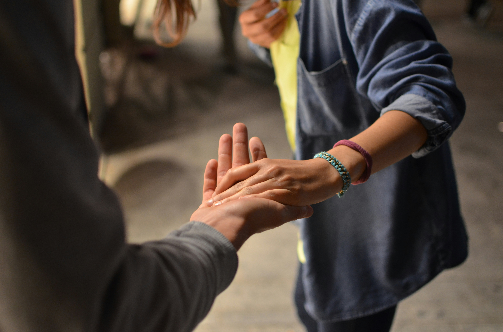

Você pode transformar uma vida hoje.
Transforme Fome em Esperança. Doe Dignidade.
Quem Somos
Somos uma ONG humanitária que atua diretamente com pessoas em situação de vulnerabilidade, levando acolhimento, alimento e oportunidades de recomeço.
Todos os dias, milhares de famÃlias no Brasil dormem com fome e sem perspectiva. A Renova Vidas atua diretamente nas ruas, favelas e abrigos, levando alimento, capacitação profissional e oportunidade para quem mais precisa. Com sua ajuda,transformamos doações em dignidade, e vulnerabilidade em recomeço. Junte-se a nós e seja a ponte entre a dor e a esperança.
Nossa missão é combater a fome, gerar oportunidades de trabalho e reintegrar pessoas em situação de vulnerabilidade à sociedade com dignidade e esperança.
Nossas Ações
Temos varios projetos dentro da nossa ong em busca, de combater a fome, mas não só isso buscamos principalmente de ajudar as pessoas a se reimtegrarem a sociedade atraves de cursos e empregabilidade.


- 


Como Ajudar
Você pode fazer a diferença na vida de alguém hoje.
Com pequenos gestos, você ajuda uma pessoa a retomar sua dignidade e se reintegrar à sociedade. Existem várias formas de contribuir:
- 🍽️ Doando alimentos.
- 🙌 Participando de eventos sociais e mutirões.
- 🧡 Atuando como voluntário(a) em ações da ONG.
- 💵 Fazendo uma contribuição financeira, por menor que seja.
Seja qual for sua forma de ajudar, você estará renovando vidas. Entre em contato com a gente agora mesmo:
Fale com a gente pelo WhatsApp💬 Quero fazer parte!
Preencha seus dados e selecione como você gostaria de contribuir. Cada gesto conta. 💛